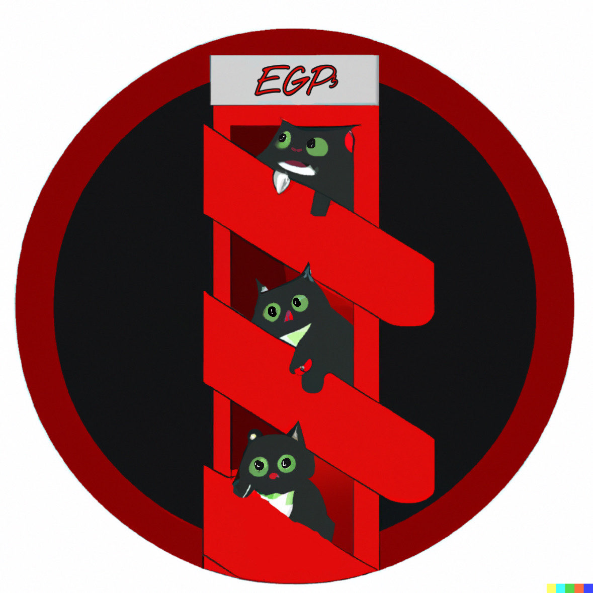

Project 6 is a web development project focused on creating an online logbook using HTML, CSS, and JavaScript.
This website is designed to allow users to document and track their daily activities, tasks, and goals in an easy-to-use and visually appealing interface.
Through this project, we will learn essential web development skills such as creating HTML pages, designing user interfaces using CSS, and adding interactivity to the logbook using JavaScript.
Additionally, the project will provide an opportunity to practice collaboration and teamwork skills through working on a group project.
Foster Phillips
A student currently in the Electronic Systems Engineering Program at Conestoga College. Primarily interested in Hardware design.
Selman Bursal
A student currently in the Electronic Systems Engineering Program at Conestoga College.

Group 3: Consisting of group members Bojan Blagovcanin, Selman Bursal and Foster Phillips,
Group 3's goal in the project is to have a running elevator and learn and experience server communication from both
front end (HTML, CSS, JAVA) and back end (C, C++, etc).